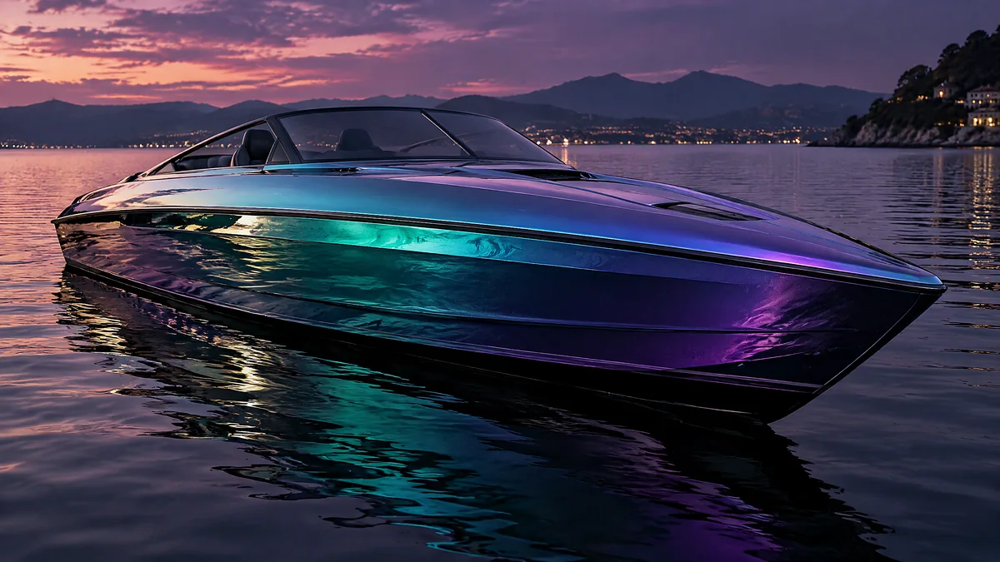
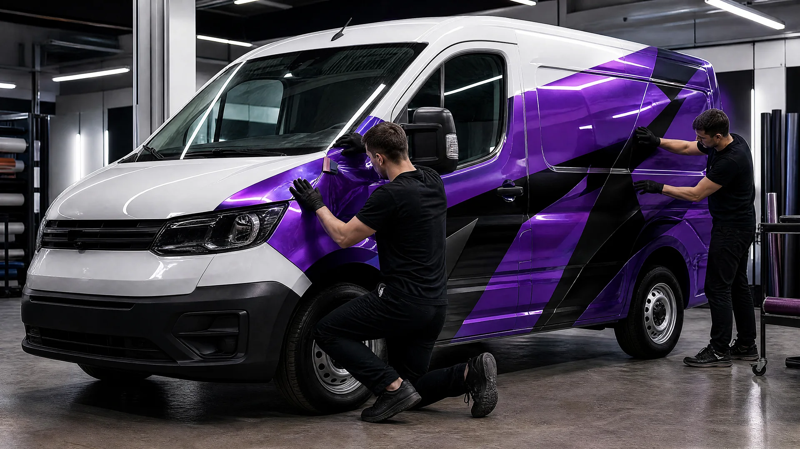
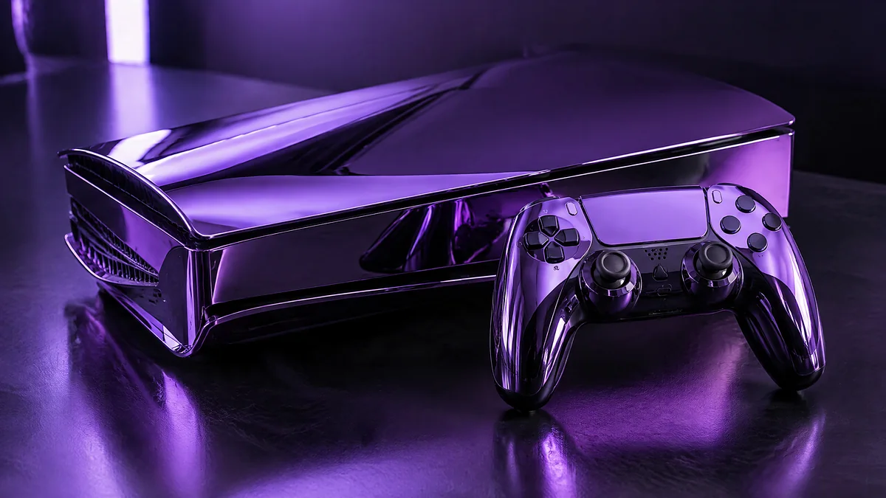

Vom Boot bis zur Konsole.
Was eine glatte Fläche hat, kann Folie bekommen. Die Folie ist je nach Untergrund eine andere, das Handwerk bleibt dasselbe.
Boote
Rumpf und Aufbauten in Farbe oder mit Design. Für Wasserkontakt gibt es spezielle Marine-Folien. Das Boot kommt auf dem Trailer zu uns.

Motorrad
Tank, Verkleidung, Felgenränder. Kleine Teile mit vielen Rundungen, ideal für gegossene Folie oder Lackschutz am Tank.

Schaufenster und Werbeflächen
Fensterbeschriftung, Sichtschutz, Milchglas-Optik, Wandflächen und Messewände. Auf Wunsch nachts, damit das Geschäft offen bleibt.

Fuhrpark
Firmendesign auf Transportern und Pkw, auch als Serie. Wir folieren nachts und am Wochenende, damit kein Auto im Betrieb fehlt. Bei Leasing-Rückgabe kommt alles rückstandsfrei ab.

Konsole, Laptop, Möbel
Spielkonsolen, Laptops, Küchenfronten, Türen. Kleine Aufträge erledigen wir oft am selben Tag.
Häufige Fragen
Geht Folie auch auf Holz oder Kunststoff?
Auf glatten, versiegelten Flächen ja. Rohes Holz und weiche Kunststoffe müssen vorbehandelt werden.
Wie lange hält Fensterfolie?
Innen viele Jahre, außen je nach Folie und Sonne kürzer. Wir beraten passend zum Fenster.
Welche Folie passt zu deinem Auto?
Drei Fotos genügen. Du bekommst ein festes Angebot.